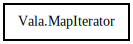

MapIterator
Object Hierarchy:

Description:
public abstract class MapIterator<K,V>
Content:
Creation methods:
Methods:
- public abstract bool next ()
Advances to the next element in the iteration.
- public abstract K get_key ()
Returns the current key in the iteration.
- public abstract V get_value ()
Returns the current value in the iteration.